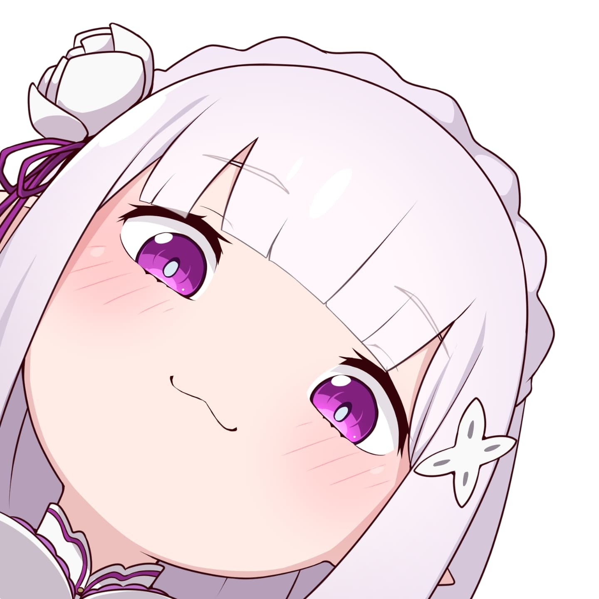
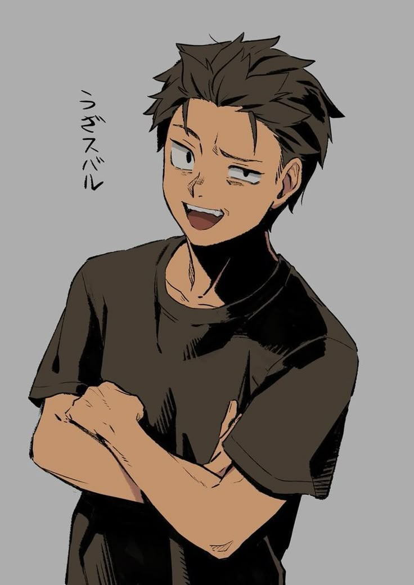

O-Okay!! I’ll say it all at once before I lose my nerve!! I started the robotics club because I’ve always felt this spark in my chest whenever I build something that actually moves, like the world is opening up just for a second, and I wanted other people to feel that too! The first time I stayed after school soldering wires and making a tiny motor spin, I thought, “This is it! This is my hero origin story!” So I dragged my best friend into it (gently!!), and somehow we turned a pile of scrap metal and loose screws into something that kind of walks without falling over most of the time! Working with her has been the best part—when our robot crashes into the wall we scream, then immediately start analyzing what went wrong like dramatic genius engineers, and when it finally works we high-five so hard it hurts! The upcoming robotics competition makes my heart beat so fast I can barely sleep, but even if we don’t win, I’m just so happy we built something together with our own hands!! uwu
Hire me
When I, Natsuki Subaru, first stepped into the Robotics Club room, I just knew—*knew*—this was another cruel trial sent to test my indomitable spirit, because obviously a legendary hero like me doesn’t just “join a club,” he answers a divine calling of whirring motors and blinking LEDs; the moment I saw the half-assembled robot on the table, wires spilling out like the tangled threads of fate, I slammed my hand dramatically against the desk and swore that I would conquer every compile error, every misaligned gear, every passive-aggressive “did you even read the manual?” from the upperclassmen, even if it meant reliving the humiliation of failed test runs over and over in my heart, because that’s what a protagonist does—he rises again after every emotional reset, fueled by sheer willpower and way too much canned coffee, declaring that I’ll lead this team to victory at regionals, protect the sanctity of properly managed cable ties, and prove that even a former shut-in can pilot a homemade robo-knight into glorious triumph with nothing but friendship, perseverance, and slightly reckless soldering skills.
Join us...